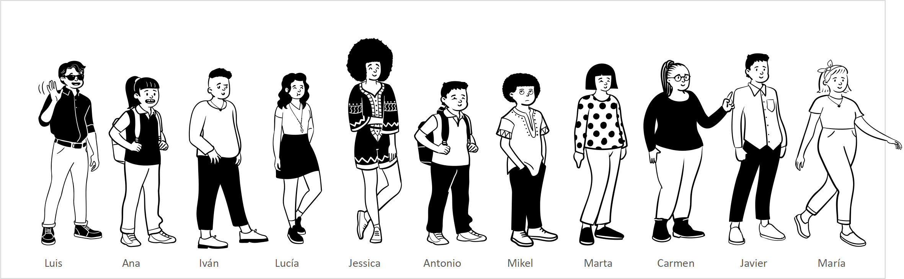

5 La exploración y descripción de los datos.
5.1 El flujo de trabajo.
En qué consiste un flujo de trabajo en el análisis de datos
Gráfico de R4DS

Cómo estructurar un flujo de trabajo para el análisis de datos industriales
5.2 Describiendo un conjunto de datos
Supongamos que queremos medir la altura de los alumnos de nuestra clase. nuestro analista de la OMS ha realizado la medida de la altura de una niña siguiendo rigurosamente el método establecido, y, por lo tanto, que está razonablemente seguro de su resultado.
Al cabo de varias jornadas de trabajo, habrá realizado varias medidas, que representarán al conjunto de niños de la población en la que ha estado trabajando. Otros investigadores pueden haber estado trabajando a la vez en otras poblaciones, y al final de sus jornadas de trabajo, quieren comparar sus resultados: ¿Hay alguna de estas poblaciones en las que los niños sean significativamente más altos (o más bajos) que en las otras? ¿Cómo describir la altura de un conjunto de individuos de manera que se puedan hacer comparaciones con otros conjuntos?
Para responder a estas preguntas, vamos a cambiar el entorno de trabajo a un grupo de niños imaginario, que vamos a llamar aula1: son nuestros compañeros y compañeras, a los cuales realizaremos una medida de altura siguiendo el procedimiento especificado en nuestro método.
Éste es nuestro grupo de estudiantes:

Supongamos que hemos realizado las medidas. Lo primero que hacemos es registrar la altura de cada persona en una hoja de cálculo:
.png)
5.3 El diagrama de puntos o dotplot
El diagrama de tallo y hojas
Construcción en Excel
5.4 La distribución de frecuencias
Si agrupamos nuestros valores por intervalos, y contamos el número de observaciones que aparecen en cada intervalo, obtenemos una distribución de frecuencias, que puede ser absoluta o relativa según que sus valores sean un recuento simple de los valores o el porcentaje que corresponde al número de observaciones en cada clase respecto al total de observaciones
Las formas más habituales de representar una distribución de frecuencias son la tabla de frecuencias o bien un gráfico de barras o histograma.
El gráfico a continuación muestra una distribución de frecuencias absoluta, calculada mediante una tabla dinámica de Excel, junto con su tabla de frecuencias absolutas.

Statistical Thinking - R Workflow (fharrell.com)
Tables can summarize frequency distributions of categorical variables, and measures of central tendency, selected quantiles, and measures of spread for continuous variables. When there is a truly discrete baseline variable one can stratify on it and compute the above types of summary measures. Tables fail completely when one attempts to stratify on a continuous baseline variable after grouping it into intervals. This is because categorization of continuous variables is a bad idea. Among other problems,
- categorization misses relationships occurring in an interval (this happens most often when an interval is wide such as an outer quartile)
- categorization loses information and statistical power because within-interval outcome heterogeneity is ignored and between-interval ordering is not utilized
- intervals are arbitrary, and changing interval boundaries can significantly change the apparent relationship
- with cutpoints one can easily manipulate results; one can find a set of cutpoints that results in a positive relationship and a different set that results in a negative relationship
Frecuencia absoluta y frecuencia relativa -> probabilidad, area bajo histograma y área bajo la curva
5.5 Diagramas de barra
5.6 Histogramas
5.7 Gráficos de densidad
5.8 Los valores centrales: media, mediana, moda
5.9 Los valores de dispersión: varianza y desviación típica, rango intercuartil
5.10 Diagramas de caja (box plot)
Box Plot with Minitab - Lean Sigma Corporation


Boxplot | the R Graph Gallery (r-graph-gallery.com)
5.10.1 Gráficos de series
5.10.2 Otros gráficos
dotplot
5.10.3 La media o promedio: una medida central
Una primera posibilidad es suponer que en nuestro grupo de once personas no hubiese variación: que todos ellos tuviesen la misma altura. Si fuese así, podemos encontrar un valor \(x\) de altura que, repetido once veces, sea equivalente a la suma de las alturas de todos ellos. Si representamos cada alumno con una letra, la suma de sus alturas sería: \[ a+ b + c + d + e + f + g + h + i + j + k \] y el valor que buscamos sería un valor tal que, sumado once veces, el valor obtenido fuese igual a la suma de la alturas medidas: \[ a+b+c+d+e+f+g+h+i+j+k = x+x+x+x+x+x+x+x+x+x+x \] Pero sabemos que la suma de valores repetidos es igual al valor multiplicado por el número de repeticiones: \[ a+b+c+d+e+f+g+h+i+j+k = 11 x \] Sólo tenemos que despejar la \(x\) para hallar este valor: \[ x = \frac{a+b+c+d+e+f+g+h+i+j+k}{11} \] Este valor que hemos obtenido es lo que se conoce como \(media\), \(valor{\ }medio\) o \(promedio\), y, como hemos visto, es aquel valor tal que repetido tantas veces como individuos tenemos, es equivalente a la suma de los valores que hemos obtenido. La media de una muestra se representa habitualmente mediante el símbolo \[\bar{x}\], y, de una manera más formal, su valor se obtiene mediante la fórmula siguiente: \[ {\bar{x}={\frac {1}{n}}\sum _{i=1}^{n}x_{i}} \] El signo \(\sum\) se conoce como sumatorio, e indica que ese término consiste en la suma de los \(x\) valores desde el primero hasta el valor \(n\). Expresado mediante una formulación matemática,
\[ {\bar{x}={\frac {1}{n}}\sum _{i=1}^{n}x_{i}={\frac {x_{1}+x_{2}+\cdots +x_{n}}{n}}} \] lo quiere quiere decir: “la suma de todos los valores observados dividido entre el número de estos valores”.
La media es lo que conocemos como un valor central, ya que representa el centro de nuestro conjunto de números. Como es el centro de nuestro conjunto de datos, equidista de todos los valores, o lo que es lo mismo, la suma de las distancias de todos los valores a este valor central es \(cero\). Más adelante veremos la importancia de este hecho, al hablar de la dispersión y las formas de cálculo de la misma. La media, junto con otras medidas como la mediana y la moda se conocen en estadística como medidas de tendencia central. Como hemos dicho, la media de una muestra se representa como \(\bar{x}\), mientras que la media de una población se representa con la letra griega mu: \(\mu\). En ambos casos, el cálculo se realiza de forma idéntica.
Volvamos a nuestro ejemplo para realizar los cálculos según el modelo que hemos descrito. En nuestro caso, la altura media de nuestros alumnos (la media de nuestro conjunto de números) se calcula como: \[ \bar{x} = \frac{153+135+140+140+175+138+145+154+152+159+154}{11} = 149,54 \] Utilicemos una hoja de cálculo para guardar nuestros valores.
La fórmula para obtener la media en la hoja de cálculo, por ejemplo en la versión en español de Microsoft Excel, es =PROMEDIO(...), donde los puntos suspensivos deben sustituirse por el rango a calcular. En nuestro ejemplo, introduciríamos la fórmula en la celda B13como =PROMEDIO(B2..B12) (Para más detalles, verificar la hoja Excel adjunta).
Para representar más cómodamente nuestros valores, dibujamos un punto a la altura de cada alumno,

y eliminamos del gráfico los dibujos de nuestros alumnos; así hemos convertido nuestro dibujo en un diagrama de puntos:

Para representar la media, aunque la media es un valor único, necesitamos añadir una columna a la derecha de nuestros datos, que rotulamos en la fila 1, celda C como altura media, e introducimos en cada una de las celdas desde C2hasta C12la fórmula del promedio, con le valor de nuestro rango de datos (Verificar hoja de cálculo). A continuación, designamos nuestro rango de datos para hacer un gráfico de puntos, y hacemos un zoom en los valores de manera que el eje Y se escale mejor entre los valores mínimo y máximo. Por último, hacemos unos ajustes en el formato para dibujar las líneas verticales que nos representan la distancia de cada valor a la media.

Si verificamos el eje \(Y\) , veremos que en este gráfico hemos ajustado la escala respecto al gráfico anterior, situando el mínimo en \(130\). Esto permite visualizar las diferencias con mucha más claridad. Hemos representado la media \(\bar{x}\) como una línea, y hemos dibujado unas líneas que unen cada valor individual con la media, que se sitúa en el valor \(149,55\), tal como calculamos más arriba.
Hemos representado la media como una serie de puntos unidos por una línea amarilla. Tal como hemos visto cuando hacíamos la descripción de este parámetro, representamos un conjunto de valores idénticos, ya que según hemos visto, la media es aquel valor tal que repetido tantas veces como individuos tenemos, es equivalente a la suma de los valores reales que hemos obtenido
Representamos en azul nuestros valores, uniendo cada valor con la línea media mediante una línea de puntos vertical. A partir de ahora, por conveniencia, eliminaremos los puntos en la linea media, dejando sólo la línea.

Esta línea azul de puntos representa la distancia de cada valor a la media. Usaremos esta distancia para calcular una distancia media, que será una medida de la dispersión de nuestros valores.
Recordemos que estamos intentando encontrar la forma de describir nuestro conjunto de números con un valor, con el fin de que nuestros analistas de la OMS puedan comparar la información de diferentes grupos de niños y ayudara determinar su situación nutricional.
Hemos visto que para describir un conjunto de números, en nuestro ejemplo, las medidas de la altura de un grupo de estudiantes, existe un valor, la media de este conjunto, que nos describe el centro de los valores. En nuestro ejemplo, si nuestro grupo tuviese un solo niño, éste tendría \(149,55{\ }cm\) de altura.
¿Es suficiente con este valor para describir el conjunto de valores? Vamos a ver que no: diferentes conjuntos de valores pueden proporcionar el mismo valor medio, y sin embargo los grupos pueden ser muy diferentes.
Veamos un caso extremo. Comparemos dos grupos, uno formado por individuos iguales y otro formado por diez individuos iguales y uno distinto. Para ello usaremos nuestra hoja de cálculo:

¿Podemos describir adecuadamente los valores de la altura de cada uno de los grupos utilizando el valor medio? Parece evidente que no, ya que a partir de diferentes valores de altura estamos obteniendo el mismo valor medio. Sin embargo, uno de los grupos es más alto que el otro, si no fuera por un sólo individuo que aparentemente distorsiona el cálculo. Podríamos incluir nuestro grupo original, y veremos que los tres grupos son diferentes, aunque su valor medio es idéntico.

Si nos ayudamos de un gráfico equivalente al que hemos utilizado antes, vemos estas diferencias con claridad:

Aunque el valor medio de estos tres grupos de datos es idéntico, parece claro que los tres grupos son muy distintos en su composición, y por lo tanto la media no es suficiente para describir con suficiente precisión cada uno de los grupos. Necesitamos un valor adicional, que nos indique de qué forma los valores se alejan del valor medio. Para ello, vamos a introducir un concepto nuevo: la medida de la dispersión, que nos indica precisamente la distancia de los valores al valor medio, e introduciremos también la distribución de frecuencias, que nos permite representar la forma en la que se distribuyen nuestros valores.
La media como centro de gravedad: Physics Simulation: Center of Mass (physicsclassroom.com)
5.10.4 Las medidas de dispersión: la desviación típica
Como hemos visto en el apartado anterior, diferentes conjuntos de datos pueden tener el mismo valor medio y sin embargo ser muy diferentes. En la última gráfica que hemos visto, el primer grupo se caracteriza por tener todos sus valores idénticos; el segundo tiene todos sus valores idénticos menos uno, que está muy apartado del resto, y el tercero tiene todos sus valores diferentes.
Ahora que conocemos cómo calcular un valor resumen de un conjunto de datos, podríamos utilizar una medida semejante para describir de qué forma en cada caso los valores se separan de la media. Podríamos utilizar una distancia media: calculamos las diferencias entre cada valor y la media, y hacemos su promedio: esto debería darnos una indicación de la magnitud de la separación de los valores en cada uno de los tres grupos.
Usemos la hoja de cálculo para ello:

Algo parece que no está funcionando aquí: el promedio de las diferencias es cero en los tres casos; no podemos usar este cálculo para calcular la dispersión. Pero esto es esperable: ya que la media es un valor central, como hemos visto antes, la suma de las diferencias de todos los valores respecto de su media debe ser forzosamente cero, y esto es lo que estamos obteniendo.
Para encontrar una solución, vamos a recurrir al viejo teorema de Pitágoras, que si recuerdas, nos dice que, en un triángulo rectángulo, el cuadrado de la hipotenusa es igual a la suma de los cuadrados de los catetos (una explicación gráfica muy divertida en el anexo …): \[ h^2= a^2+b^2 \] Esta fórmula es la base del cálculo de la distancia entre dos puntos:

\[ d(A,B)=\sqrt{(x_2-x_1)^2+(y_2-y_1)^2} \] ¿Podemos adaptar esta fórmula para el cálculo de nuestra distancia media? La respuesta es sí. En nuestro caso, sólo necesitamos la coordenada \(X\), ya que sólo estamos calculando la distancia en una dimensión. Si tenemos en cuenta un solo punto, esta distancia \(d\) sería: \[ (d{\ }del{\ }valor{\ }1{\ }a{\ }la{\ }media)^2=(x_1-\bar{x})^2 \] ¡El hecho de elevar al cuadrado las diferencias nos da la solución! Las diferencias negativas ya no son un problema porque sabemos que al elevar un numero negativo al cuadrado, el resultado es positivo; de esta manera conseguimos que las diferencias no se anulen. Ahora sí podemos calcular una distancia media \(\bar{d}\) entre el conjunto de puntos y su media, calculando el promedio de las diferencias elevadas al cuadrado: \[ (\bar{d}{\ }de{\ }los{\ }n{\ }valores{\ }a{\ }la{\ }media)^2=\frac{(x_1-\bar{x})^2 + (x_2-\bar{x})^2+\cdots+(x_n-\bar{x})^2}{n} \] y utilizando la notación que hemos aprendido antes, \[ (\bar{d}{\ }de{\ }los{\ }n{\ }valores{\ }a{\ }la{\ }media)^2={\frac {1}{n}}\sum _{i=1}^{n}(x_{i}-\bar{x})^2 \]
Al igual que en el cálculo de la distancia entre dos puntos, sólo tenemos que extraer la raíz cuadrada de este valor para obtener la distancia media, que es el parámetro que estábamos buscando.
La \[(\bar{d}{\ }de{\ }los{\ }n{\ }valores{\ }a{\ }la{\ }media)^2\] se conoce en estadística como varianza, y su raíz cuadrada es lo que se conoce como desviación típica. La varianza de una población se representa en estadística con el signo de la letra griega sigma minúscula elevada al cuadrado, \(\sigma^2\), y la desviación típica, mediante la letra \(\sigma\). En el caso de una muestra, la varianza se representa como \(s_x^2\), y la desviación típica, como \(s_x\). En nuestro caso, utilizaremos la primera notación; más adelante veremos los conceptos de población y muestra y explicaremos el concepto de grados de libertad. Veremos también que la fórmula para el cálculo de la desviación típica muestral es ligeramente diferente de la de su equivalente poblacional, y explicaremos por qué.
Es importante resaltar que la desviación típica es una medida de la distancia media de los valores de una población a su media, y por lo tanto tiene dimensión, la misma que las medidas originales. La varianza, al estar elevada al cuadrado, no tiene una dimensión, o, mejor dicho, tiene la de la medida al cuadrado.
Con estos nuevos hallazgos, recalculamos nuestra hoja de cálculo:

Vamos a analizar con detalle esta tabla.
En la columna J tenemos nuestra población original de 11 alumnos, con las alturas que hemos medido. En la columna B hemos supuesto que todos los alumnos fuesen iguales, con la misma altura del valor medio de los datos originales. En la columna F hemos simulado otro grupo, con todos los valores iguales excepto uno, y con la misma media que los otros dos grupos.
A la derecha de cada columna de medias, tenemos la columna de diferencias (columnas D, H y L), y en la fila 13, nuestro primer intento de calcular una dispersión media; intento fallido, puesto que obteníamos el valor \(0\) para los tres grupos.
En la siguiente columna a la derecha, para los tres grupos (columnas E, Iy M), hemos elevado al cuadrado la distancia de cada valor a la media, siguiendo los hallazgos que nos ha proporcionado el teorema de Pitágoras y la fórmula de la distancia entre dos puntos. En la fila 13 de estas columnas, calculamos el promedio de la distancia a la media al cuadrado: esta vez el resultado ya no es cero, sino que obtenemos el valor de la varianza, de acuerdo con la fórmula que hemos deducido más arriba. En la fila 14 (columnas B, F y J)utilizamos la fórmula de la hoja de cálculo para la varianza poblacional (más detalles posteriormente), y vemos que coincide exactamente con el promedio de las diferencias al cuadrado, tal como debe ser, ya que en eso consiste la fórmula que hemos deducido.
Por último, en la fila 15calculamos la desviación típica de ambas formas, con la fórmula de la hoja de cálculo para la desviación típica poblacional (columnas B, Fy J), que Excel llama desviación estándar, y como la raíz cuadrada del promedio calculado antes (columnas E, Iy M). De nuevo, ambos valores coinciden exactamente, como esperamos.

Ahora sí tenemos una forma más completa de describir nuestro conjunto de valores. Aunque el valor medio es el mismo en los tres casos, la dispersión de los valores es muy distinta.
¿Son suficientes estos dos parámetros que hemos calculado para describir un conjunto de datos? La respuesta a esta pregunta es sí y no. La explicación es que, más allá de los valores numéricos que hemos obtenido, la visualización gráfica de los valores nos debe hacer reflexionar.
En el primer grupo, todos los valores son iguales a la media. La variación es cero. Son valores que hemos simulado en nuestra hoja de cálculo, pero difícilmente en el mundo real encontraremos una población en la que todos sus valores, en este caso, la altura de un grupo de alumnos, sean idénticos.
En el segundo grupo, todos los valores son idénticos, salvo uno, que se distancia mucho. ¿Debemos aceptar esto como bueno? En realidad, ¿es cierto que el valor medio de este grupo sea el mismo que el del primero? Para responder a esta pregunta debemos recurrir a nuestra experiencia, la estadística no nos da fórmulas mágicas. Pero, con un poco de sentido común, parece que el caso extremo que aparece en este grupo no es coherente con el resto de valores. Es lo que se llama un valor anormal o extraño (en inglés, outlier), y debe hacernos reflexionar sobre si el valor es correcto y realmente pertenece a esta población, o es un error de medida. O, simplemente, un valor que corresponde a otro grupo y que por error hemos situado en éste. La decisión de eliminar o no un valor anormal es una de las decisiones más complejas en estadística, que pueden tener una influencia enorme en la interpretación de los datos, y por lo tanto, hay que hacer con sumo cuidado. En este caso, extremo y artificial, el valor anormal debería ser eliminado, ya que, en realidad, todos los valores restantes son idénticos y más bajos que los del grupo 1. No tiene sentido lógico decir que sus medias son idénticas.
En el tercer grupo todos los valores son diferentes, y no podemos decir nada especial sobre sus valores individuales. Hay un valor que se destaca del resto, pero ¿podemos afirmar que es anormal? Seguramente, no con seguridad. De nuevo la experiencia debe indicarnos cómo proceder, aunque en este caso no tendría sentido eliminar este valor. En la situación real, todos conocemos a niños que han pegado el estirón antes que sus compañeros, y en algunos casos, pueden llegar a ser mucho más altos (o más bajos, si han tenido un retraso en este estirón) La experiencia nos dice que no es seguro que este valor sea realmente anormal, y por lo tanto, deberíamos conservarlo.
5.10.5 Las limitaciones de la media y la desviación típica
En ocasiones nos enfrentamos a conjuntos de datos con valores de media y desviación típica idénticos o muy parecidos, pero que en realidad son muy diferentes. Veamos un ejemplo, semejante a los que hemos visto hasta ahora.

(cambiar a caso 3)


En este caso, vemos que tanto la media como la desviación típica son idénticos, y sin embargo los datos son muy diferentes, tal como nos muestra el gráfico de dispersión que hemos estado utilizando:

La existencia de valores anormales o extremos muestra una de las debilidades de la media y la desviación típicas como descriptores de una población: ambos parámetros son muy sensibles a los casos extremos. En realidad, sólo deberíamos utilizar la media y la desviación típica para describir un conjunto de datos cuando estamos seguros de que la distribución de estos datos tienen una forma determinada, la de la campana de Gauss. Lo cual nos lleva al siguiente capítulo: las distribuciones de frecuencias.
Modelo: práctica de puntos con un dado, dos dados, tres dados, etc hasta 30
suma <- rowSums(replicate(30, sample(6, 10^6, replace=T))) length(suma) hist(suma)
Financial Times Visual Vocabulary: Power BI Edition – Some Random Thoughts (sqljason.com)